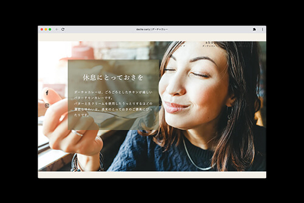

dacha curry
webサイト制作（デザイン/コーディング）
ネット販売限定のバターチキンカレー「ダーチャカレー」のwebサイト。
- URL：
- dacha-curry.com
- 使用ツール・言語：
- AdobeXD、Photoshop、Illustrator、PremierePro、HTML、CSS、javascript、jQuery


スクールの卒業制作として制作したサイトです。実際にクライアント様にご依頼いただき、企画、デザイン、コーディング、公開まで行いました。
企画時に、クライアント様が目指すゴールやイメージを知るため、ヒアリングシートを作成しています。
ヒアリングシートをもとにペルソナを立て、イメージにずれがないよう企画を進めました。
ペルソナを立てるにあたっていくつか統計を参考にしました。ターゲットは「大人女性」とざっくりと伺っていましたが、ダーチャカレーの特徴である「ホームパーティでも出せるようなカレー」に刺さる世代や、ネットショッピングをよく利用する世代などの情報を集めて、より具体的な人物像を明確にしていきました。
ダーチャカレーのイメージや世界観を伝えるために、「都会の女性が取り入れたくなるローカル感をダーチャで表現する」をデザインのコンセプトとしました。
「ダーチャ（dacha）」とは、ロシアの菜園付きの別荘のことです。ロシアの人たちは週末や夏季休暇には多くの人が郊外にあるダーチャに行き、菜園で野菜や花の世話をしたり、親しい人を招いて一緒に食事をしたりして過ごしています。大人女性がこのようなローカルな文化を知って自分の暮らしに取り入れたくなるように考えました。最初は別荘というイメージから「特別感」や「高級感」を押し出そうと考えていましたが、ダーチャで過ごすというのは日本の別荘のイメージとは異なり、ロシアではごく一般的な休日の過ごし方なので、「ローカル感」「休息」「肩の力を抜く」といったイメージで考えていきました。
また、ダーチャカレーを食べたらどういう気持ちになるのか、なってほしいのかといった部分についても考え、サイトを見たときに「食べたら幸せな気持ちになりそう」と思ってもらえるデザインを目指しました。
コーディングについては、ゆったりとしたローカルな休息をイメージさせるために少しゆっくりめのアニメーションを設定したり、風通しの良い導線を意識したレイアウトにしたりしています。
見出しの文字は、jQueryとSVGで手書きしているようなアニメーションを設定して、アイキャッチになるのと併せて手作りのようなあたたかみを感じられるようにしました。
スマホ、PCどちらも流入があるかと考えられるため、レスポンシブ対応をしています。 また、ブラウザサイズによって異なるサイズの画像を出しわけすることで、表示速度を高速化しています。
野村證券 金融経済研究所「女性の労働参加が後押しするインターネット消費」- phttps://www.nomuraholdings.com/jp/services/zaikai/journal/pdf/w_201807_02.pdf
野村総合研究所(NRI) 「ニュースリリース_8回目の「生活者１万人アンケート調査」を実施」- https://webtan.impress.co.jp/n/2018/11/13/31031
asahiグループホールディングス ハピ研 「ホームパーティをよくしますか？｜毎週アンケート」 - https://www.asahigroup-holdings.com/company/research/hapiken/maian/ 201710/00653/